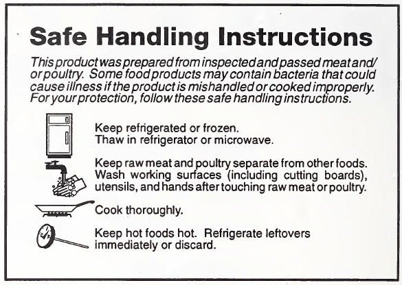

Regulation
USDA treated pathogen-contaminated raw meat as not adulterated.
How did the 1993 Jack in the Box E. coli outbreak, which started with children who were sick in Washington state, cause the government to change how ground beef is regulated, and what changed in how fast food is made and inspected after this incident?
Chapter 04 · 1993—1996
Rules changed in stages. The outbreak mattered—but the record also shows work, science and pressure already in motion.

A regulatory turning point
The official title is the USDA Pathogen Reduction; Hazard Analysis and Critical Control Point (HACCP) Systems final rule, dated 25 July 1996.
Select a period. Blank cells say “No entry yet”; they are not filled by guesswork.
USDA treated pathogen-contaminated raw meat as not adulterated.
E. coli O157:H7 was not yet linked to foodborne illness.
No entry yet
No entry yet
No entry yet
No entry yet
No entry yet
1982 outbreaks in Oregon and Michigan tie O157:H7 to one fast-food chain's hamburgers (published 1983).
No entry yet
No entry yet
Preparatory work on HACCP and risk-based inspection began in 1992, according to the officials involved.
O157:H7 outbreaks were reported in the U.S. from 1982 onward.
FDA revises the Model Food Code's ground-beef temperature guidelines.
The outbreak strain is isolated from patients and from 11 lots of patties.
No entry yet
Discussed at President Clinton's first cabinet meeting, according to officials.
Recall on 18 January; FDA interim recommendation to cook hamburgers to 155°F.
Cases in WA, ID, NV and CA; four deaths. Patties from chain A.
Safe-handling labels mandatory (1994). O157:H7 treated as an adulterant in raw ground beef (1994). PR/HACCP final rule (July 1996).
No entry yet
Meat-industry and supermarket groups sue to stop E. coli testing, and lose a preliminary injunction (Dec. 1994).
No entry yet
FSIS begins sampling raw ground beef for O157:H7 (1994).
No fast-food hamburger outbreaks reported after 1995.
No entry yet
A reported 46% fall in O157:H7 infections by 2004.
Plants run HACCP systems and monitor their own production; FSIS verifies.
No entry yet
Officials say other countries exporting to the U.S. had to adopt equivalent systems.
O157:H7 outbreaks continue from ground beef and other foods.
Each side keeps its own evidence trail.
USDA did not treat raw meat carrying pathogens as adulterated.
Under the 1994 policy, raw ground beef containing O157:H7 was treated as adulterated, meaning illegal to sell, and FSIS began sampling for it.
One batch of patties traced back to five U.S. plants, one Canadian plant, and farms in six states. No single source could be found.
Under the 1996 rule, every federally inspected plant had to run a HACCP plan controlling hazards at each critical point.
The CDC judged that undercooking likely played an important role. The chain's actual temperatures are not yet sourced.
In 1993 the FDA issued an interim recommendation to cook hamburgers to an internal temperature of 155°F. The Model Food Code was revised the same year (Exhibit E09).
Inspectors examined carcasses on the line, an approach Dunn calls the old “sewer state” model.
Under the 1996 rule, FSIS verifies company-run HACCP systems and pathogen-reduction measures.
Detection depended largely on government inspectors and, in 1993, on doctors noticing sick patients.
Under the 1996 rule, companies had to identify their own hazards, monitor them, and correct failures.
The outbreak was detected when a physician reported a cluster of children with HUS.
How outbreaks are detected today (for example, national DNA-fingerprinting networks) still needs a verified source.

Choose Changed, Continued or Not sure, then check the evidence.

The scale records your judgment locally in this browser. The evidence and counter-evidence remain visible beside every choice.
How much did the 1993 outbreak matter?
Rules followed quickly: Food Code (1993), labels (1994), adulterant policy (1994), HACCP rule (1996). Officials describe it as an accelerator.
How did knowledge about E. coli shape policy?
O157:H7 had been known as a hamburger risk since 1982. The cooking-temperature answer came straight from that science.
How much did public and consumer pressure matter?
The outbreak reached a presidential cabinet meeting, according to officials.
No evidence of consumer campaigns, media or polling has been gathered yet. This thread is the weakest.
What were regulators already considering?
CDC and FSIS were working on critical control points in 1993; officials date preparation to 1992.
How did industrialization and concentration affect the situation?
The outbreak traced to many plants and farms. Juska et al. argue the system made such outbreaks likely.
How did fast-food companies respond?
Cooking guidance changed in 1993, and no fast-food hamburger outbreaks were reported after 1995.
Was the outbreak the cause, the trigger, or one part of a larger process?→